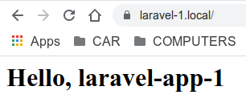

Nginx reverse proxy на Docker контейнерах
Reverse proxy для localhost и VPS
Reverse proxy слушает 80 и 443 порты, принимает и транслирует запросы ко всем приложениям позади него и обеспечивает безопасный SSL протокол. Применение reverse proxy дает следующие возможности:
- обращение к приложениям на localhost примерно так my-app.local вместо обезличенного localhost:8000
- размещение на одном VPS несколько доменов
- проверяет SSL сертификаты и управляет их получением и продлением для всех приложений в одном месте
Существуют различия в реализации reverse proxy на VPS и localhost, в основном связанные с реализацией SSL протокола. На localhost он носит имитационный характер. На VPS мы имеем дело с реальными доменами и реальными SSL сертификатами.
Для имитации SSL протокола на localhost, мы используем утилиту Mkcert, любезно предоставленную Filippo Valsorda. Данная утилита позволяет генерировать локально-доверенные сертификаты с собственным локальным центром сертификации. Для запуска reverse proxy на localhost и генерации SSL сертификатов я написал специальный скрипт, который при необходимости установит Mkcert.
Реальные SSL сертификаты для VPS будем получать в центре сертификации Let's Encrypt, который предоставляет их бесплатно. Для запуска reverse proxy на VPS и генерации SSL сертификатов, я так же написал специальный скрипт. Основой для этого послужила вот эта статья
Запуск reverse proxy на localhost
Для определенности будем основываться на файловой структуре, которая создана в разделе
Вводная часть и уже существует хотя бы одно
приложение, созданное в разделе
Laravel на Docker
а так же в /etc/hosts существует запись о локальном домене для
этого приложения
127.0.0.1 laravel-1.local
Клонируем с GitHub
проект
nginx-reverse-proxy-ssl-local в директорию
~/my-projects/docker-reverse-proxy
cd ~/my-projects
git clone https://github.com/acwstudio/nginx-reverse-proxy-ssl-local.git
docker-reverse-proxy
cd docker-reverse-proxy
Перед тем как выполнить скрипт init-mkcert.sh на запуск нашего reverse proxy, необходимо сделать некоторые настройки в файле .env.ssl
cp .env.ssl.example .env.ssl
nano .env.ssl
отредактируем DOMAINS, указав наши локальные домены
DOMAINS='laravel-1.local'
Теперь необходимо создать конфигурационный файл
etc/nginx/conf.d/site-available/laravel-1.conf,
являющийся частью всей конфигурации и отвечающий за транслирование запроса к приложению.
На каждое приложение создается свой файл
Для удобства полная конфигурация разбита на несколько файлов, каждый из которых отвечает за отдельные ее части. Потом эти файлы инклюдятся в определенной последовательности и комбинациях в один nginx.conf файл.
cd etc/nginx/conf.d/sites-available/
cp service-name.conf.example laravel-1.conf
cd ../sites-enabled
ln -s ../sites-available/laravel-1.conf laravel-1.conf
nano ../sites-available/laravel-1.conf
В открывшемся файле редактируем следующие строки
1 строка изменим MyApp на laravel-app-1
3 строка изменим MyApp_nginx на LarApp1_nginx
9 строка изменим myapp.local на laravel-1.local
15 строка изменим http://MyApp на http://laravel-app-1
Примечание: в 3 строке LarApp1_nginx это имя контейнера в котором выполняется nginx для данного приложения. Напомню, оно было создано в разделе Laravel на Docker
Теперь все готово к запуску!
cd ~/my-projects/docker-reverse-proxy
cd ./init-mkcert.sh
Набираем в браузере http://laravel-1.local и замочек на месте
